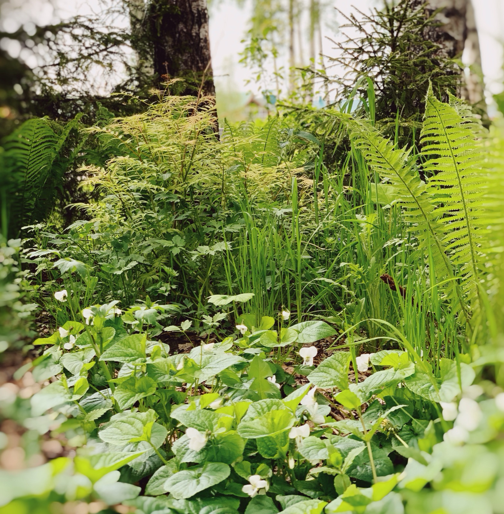

Forest Landscape Restoration

The work centred on restoring the understorey after construction — preserving mature birches and rebuilding layered plant communities so the forest could settle back over the landscape.
From concept and planting design through plant sourcing to author supervision on site: geoplastics, paths threaded delicately through the trees, meadow and waterside zones, and a long-term planting strategy followed across three years of change.
- Constructed 2020–2022
- 50+ tree & shrub species · 95 perennial species
- 32,157 perennials & ornamental grasses planted
A warning before we begin: this story is not a short one. Please, settle into a comfortable seat, bring a cup of something good, and enjoy the ride. Whether this work becomes your cup of tea or not, I hope you'll find something interesting along the way.
The 2.5-hectare site is shaped by an existing birch woodland that occupies more than one third of the property. The landscape concept began with this woodland, using ecological restoration and biodiversity enhancement as a framework for the site's development.
A series of distinct landscapes emerge within the woodland setting: shaded fern gardens, berry meadows, rolling grassy landforms, and riverside walks. A boardwalk connects these experiences, leading visitors through changing atmospheres towards the river and its seasonal evening mists.